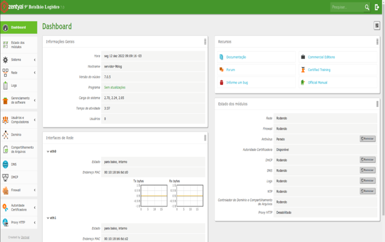
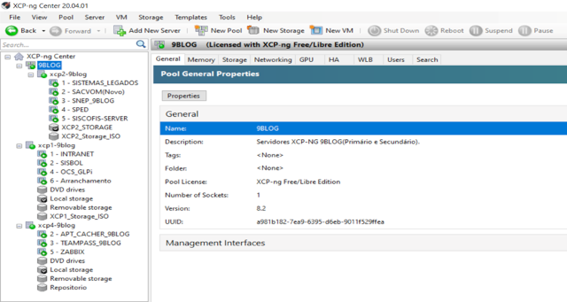
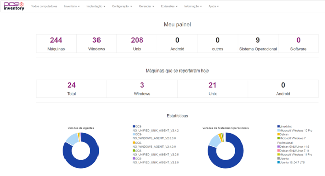
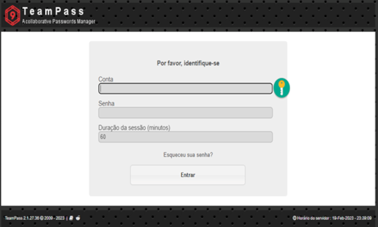
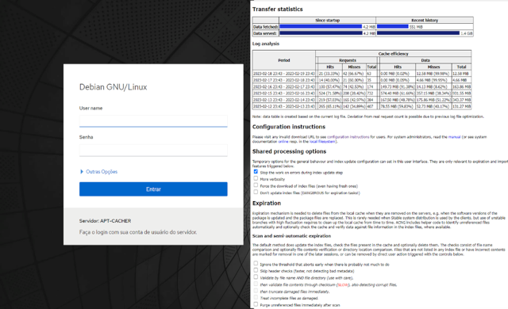
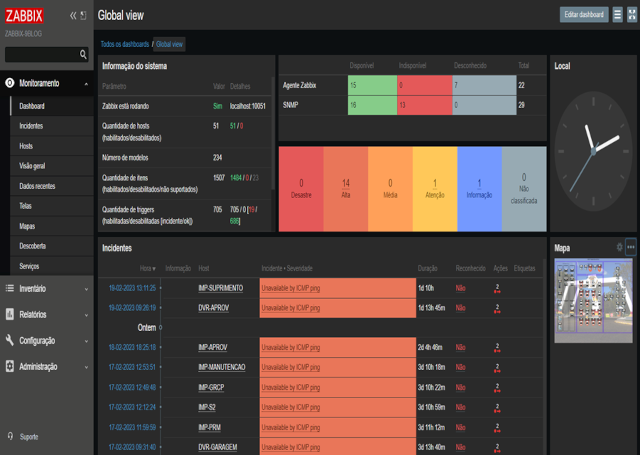
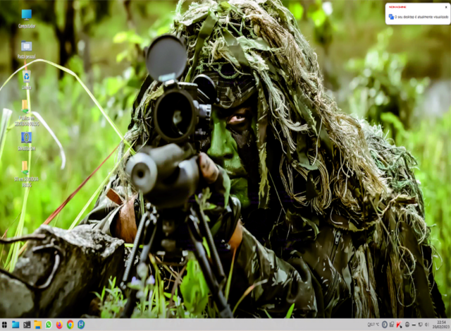

Servidores:
Zentyal Server 7.0.9 Servidor de Arquivos com AD, DNS, Proxy e Firewall:  Servidor multipropósito de código aberto com servidor de arquivos Samba 4 com AD, DNS, Proxy Squid, Dansguardian e IPTables.
XCP-NG 8.2 Servidores Virtuais Debian, SISBOL e SPED 2.9:  Servidor de Virtualização XCP-NG, que permite o uso racional de recursos computacionais.
Gerência e Suporte:
OCS Inventory Sistema de inventário de PCs:  Servidor de inventário de PCs, opensource, com agentes de rede Windows e Linux.
GLPi Sistema para gerenciar chamados de TI: Sistema de gerenciamento de chamados de TI com login integrado via LDAP do Zentyal.
TeamPass Sistema para gerenciar senhas:  Sistema de gerenciamento de senhas ciptografado com login integrado via LDAP do Zentyal.
AptCacher-NG Sistema para atualizações de segurança:  Serviço de atualização de segurança, tanto de servidores quanto de estações de trabalho Linux.
ZABBIX Sistema de monitoramento de dispositivos:  Serviço de monitoramento de ativos de rede, de código aberto, com integração ao Telegram/Discord.
Intranet CMS Joomla 3.12.16: Gerenciamento de conteúdo, contendo artigos de interesse e links para sistemas úteis.
LinuxMint (customizado) Estação de trabalho Linux Mint 21.2:  Customização de máquinas clientes com SO Linux com SIAFI, Token, Siscofis e demais funcionalidades, importantes para as OMs, funcionando.